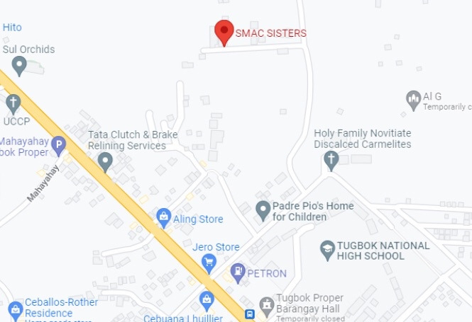

Institution Details

Address: Purok 6 Habana Compound 8022, Tugbok, Davao City
Contact Person/s: Sr. Luzviminda C. Pepito
Contact Numbers: 09432466811, 082 - 2930949
Vicinity map: (The red pinpoint is the location of the institution.) -->
Directions: (From AdDU JHS Campus)
1. Take Camia Street, turn left after Matina Swiss Deli to MacArthur highway.
2. Continue straight, then turn right onto where the Ulas Market Vendors Association is.
3. Continue straight onto Davao-Bukidnon Road, turn right to Rambutan street.
4. Continue straight and take the second left path, continue again until you see a left pathway.
5. After you went to the left pathway you will see the SMAC SISTERS facility.
Mission
There are numerous families who are struggling with poverty and have difficulties with providing proper care and treatment for their sick members, a lot of children who are out-of-school due to economic incapacity, suffering from malnutrition, lacking moral and good hygiene. The SMAC institution focuses on those who have been neglected, abandoned and are in need of medical help, the Sisters gathered those children together to provide them with a comforting home. They constantly aim to improve the quality service that they provide for the children, to develop them into psychologically and spiritually mature people who are able to enjoy the fullness of their lives. The institution also offers the children certain programs, free education, food, and other necessities needed for the children’s physical and psychological well-being.
History
The SMAC Inc., formerly known as the Providence Home of St. Joseph Davao Inc., arrived in Davao on January 17th of 1998 where they served the parish of Toril and took charge of the CARITAS. The institution officially opened on the Feast day of Saint Joseph and is managed by the SMAC Sisters.Their Mother Foundress Madre Nanda Giamberardini, envisioned to improve the quality services they provide for the children through realigning programs and concretize its service to prepare their institution as independent. They have observed poor families who couldn't afford medical treatment and street children that were affected by malnutrition, poverty and victims of Abuse, which led them to gather them and provide them with a home.
Beneficiaries
The administration aims to give their fellow Filipinos a better living condition. Thus, they aim to benefit the following by admitting them to the institution. (1) poor parishioners, (2) poor families and (3) out-of-school children. The beneficiaries suffered due to economic incapacity, resulting to most of them wandering in the streets. Branching out of this problem of poverty is malnutrition. Lack of hygiene and low morale as a result of lack of education. Due to these factors, there are children who are being admitted to the institution are victims of violence and sexual abuse as a result of their vulnerability in the streets before being admitted to the institution, these orphans have been classified as abandoned, neglected, and in need of medical and health care services. Thus, it is the goal of SMAC sisters to be the guide of these children in terms of way of life and education.
Benefactors
Meanwhile, the organizations/people that give support to this institution are the Ateneo de Davao University Junior High School Community, communities/individuals who are willing to provide support and provide the basic needs. The ADDU JHS previously took part and helped the SMAC with the fence making, repainting of toys, and recreational area before the pandemic. The institution also discusses their reliance on sponsorships that they weren't able to sustain due to the impact the pandemic caused. Overall, the institution is not supported by the government thus they are dependent on donations from various people which they are thankful for especially in this time of crisis.